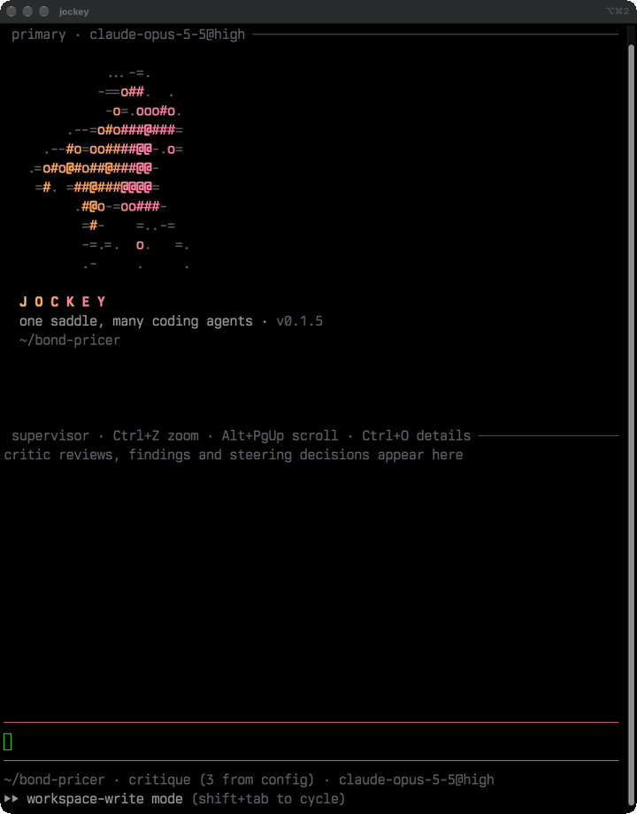
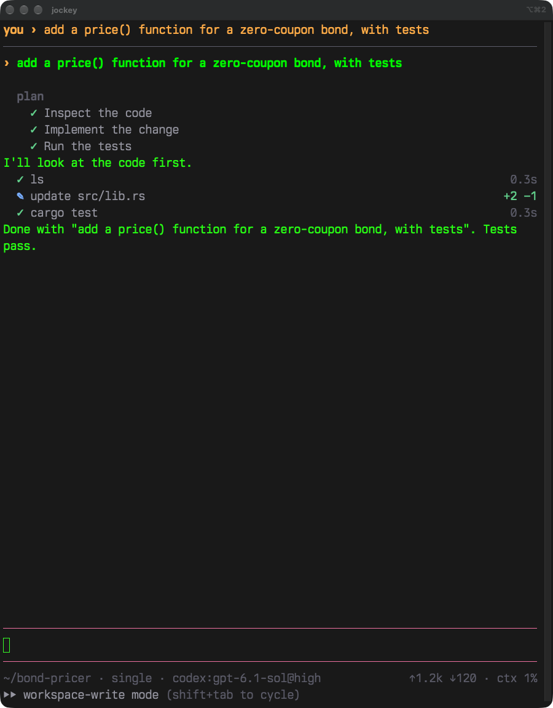
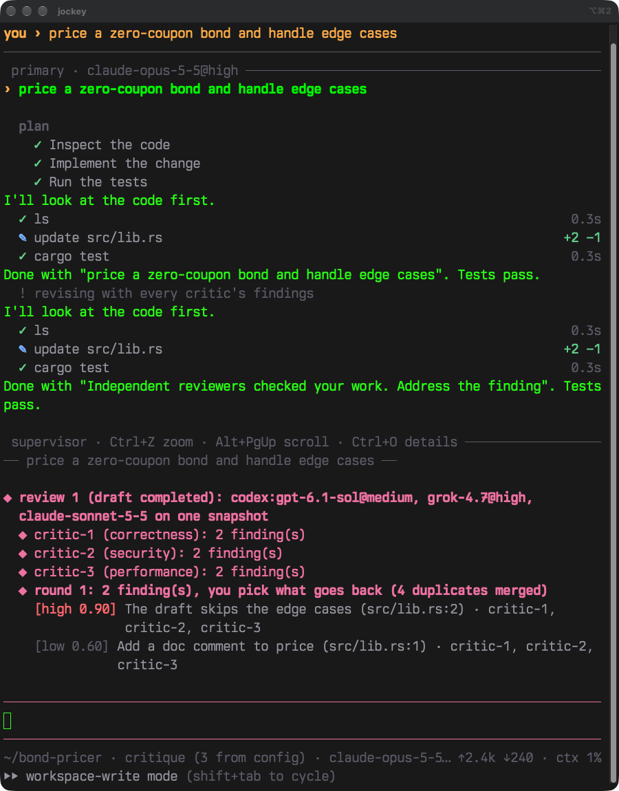
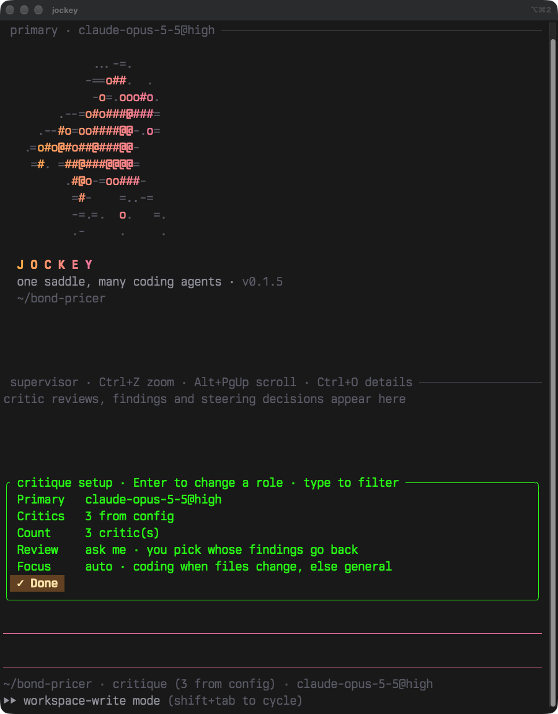

One saddle, many coding agents.
jockey rides the coding-agent CLIs you already use and makes them work together. One agent works while others check, judge and steer it.
brew install lorenzopi/tap/jockey
Needs at least one of codex, claude or grok, installed and signed in. Then run jockey in a project folder.
Four ways to ride
- single
- One agent, one conversation. Type while it works to steer it.
- cascade
- The agent attempts, your checks run, a judge reviews. Rejected work retries with the feedback.
- critique
- The agent drafts, critics review in parallel, and the agent revises with their findings.
- autosteer
- Critics watch the agent while it works and correct it mid-turn.
Critics you can overrule
In critique mode, three critics review the same snapshot of the draft at once. Each has a focus: correctness, security and performance for code; accuracy, completeness and clarity for everything else.
Their findings are merged and ranked. You can send all of them back, one critic's, or none.

Steer while it works
The agent's plan, tool calls and edits stream in as it goes. Press Enter mid-turn to correct it, or Alt+Enter to queue what's next.
Your last prompts and steers stay pinned on top, so you always know what you asked.

See every finding
Multi-agent modes split the screen: the agent on top, the critics' reviews below. Each finding shows its severity, confidence, location and which critics reported it.
Ctrl+Z zooms into either pane. Ctrl+O shows the evidence and proposed fix.

One menu per mode
Ctrl+L opens a mode's setup: which model is primary, which models critique, how many, and whether to pause for your call after each review.
Models and thinking levels come live from each CLI. Your picks are saved as defaults.

Safety rails
No surprise bills
jockey won't run past your subscription into paid credits unless you allow it.
Reviewers can't write
Judges and critics always run read-only, in a snapshot of the workspace.
Critics can't widen permissions
Advice to bypass permissions, use sudo or add API keys is rejected.
| Permission mode | The agent may |
|---|---|
read-only | read |
workspace-write | edit the project folder; anything else asks you |
auto | the same, with the provider's own reviewer approving routine actions |
yolo | anything, without asking |
Shift+Tab switches the running agent between them.
What jockey doesn't do
Hold your keys
It drives the CLIs you're signed in to. It never sees credentials and never uses API keys.
Bring its own model
Every answer comes from Codex, Claude or Grok, through their official CLIs.
Run a service
No account and no server of its own. Runs are saved on your machine, with credentials masked; the only call out is a check for new versions.
Undo for you
Stopping an agent stops it and everything it started. File changes stay; use git.